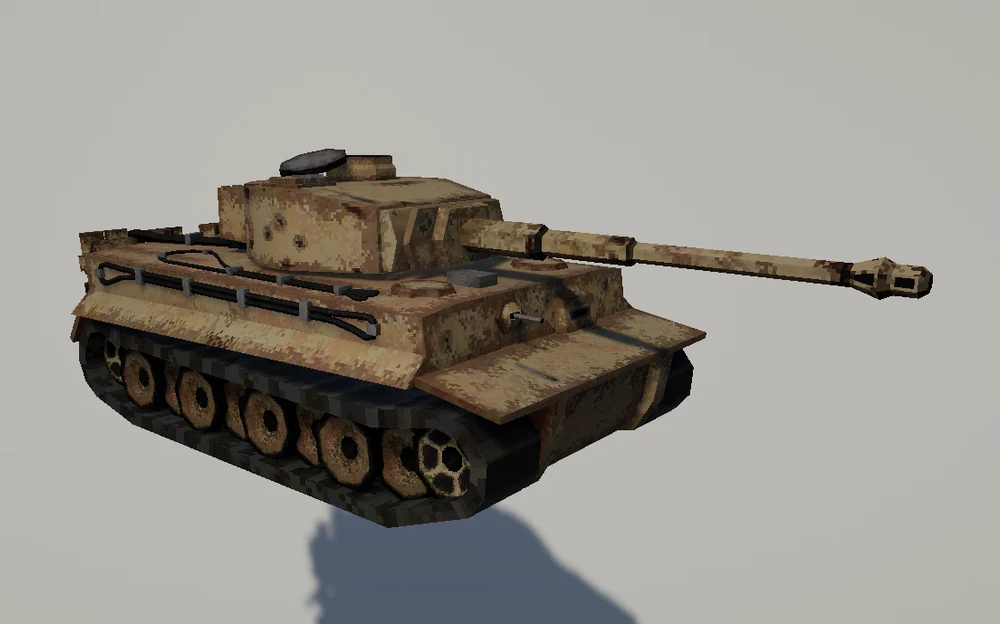
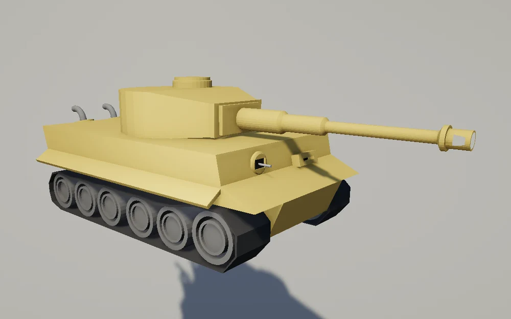
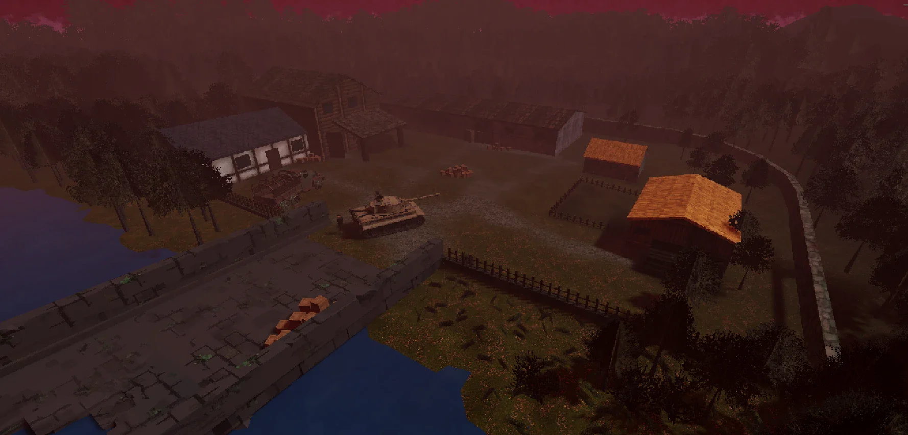
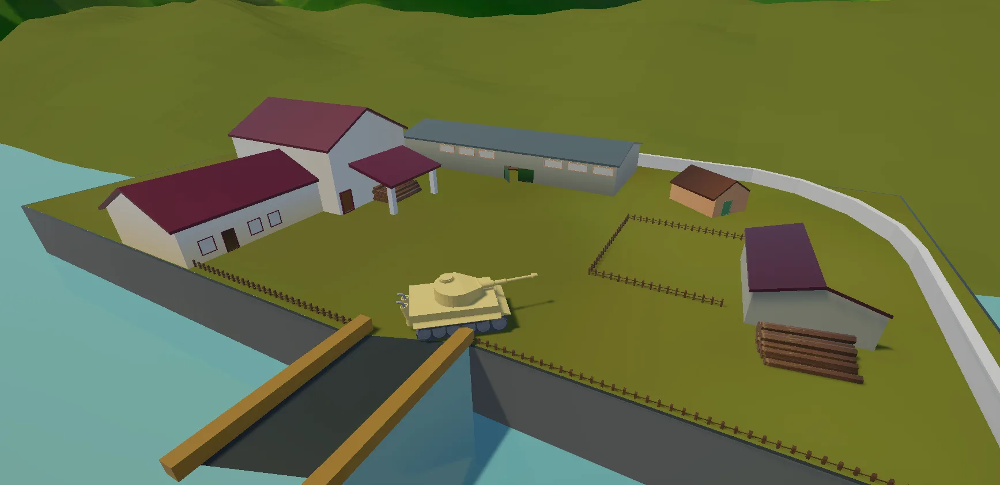
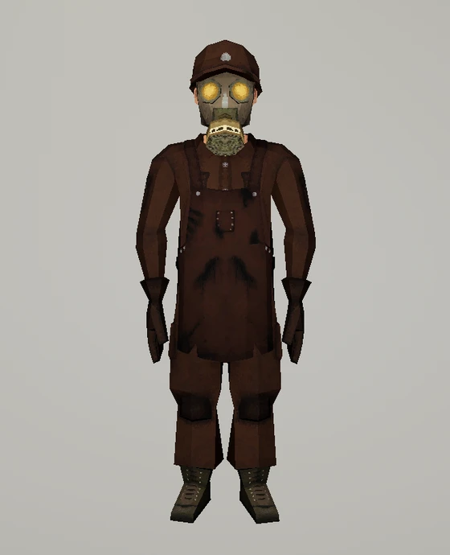
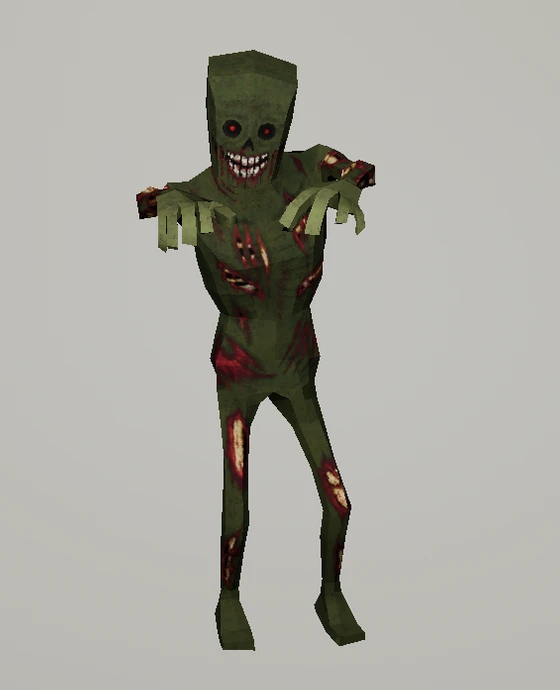
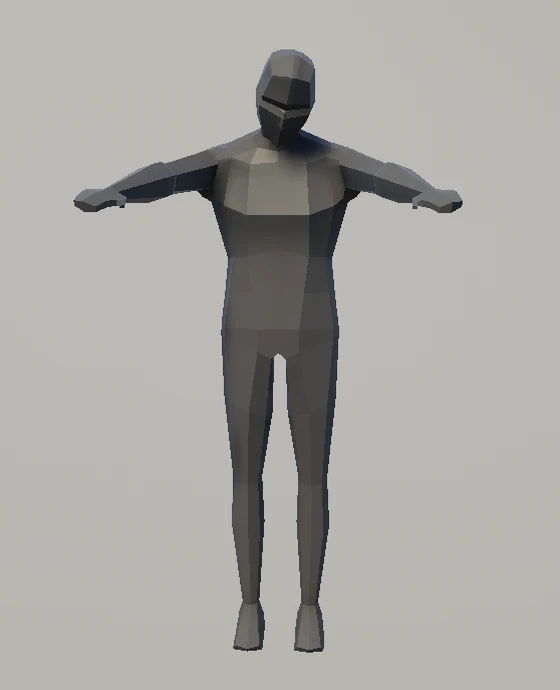
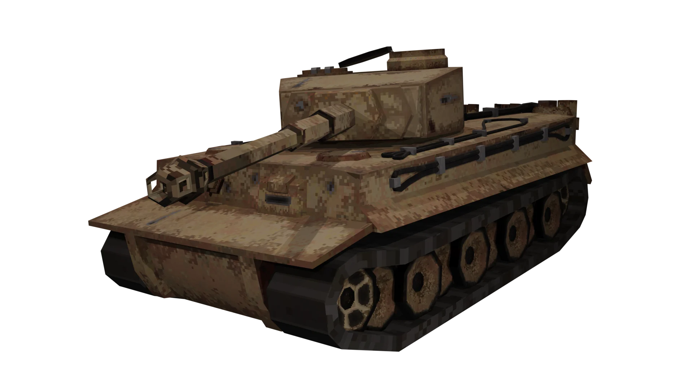

PSX Tiger 1
PS1-style Tiger I tank with hand-painted textures.
A wave-based survival shooter for PC and Meta Quest, built in Unity 6 by a five-person team.
Set in an alternate WWII overrun by a gas-mutated infection, the player is welded to the turret of a tank disabled by an anti-tank mine and defends it alongside Anatolij, a young mechanic sent out on supply runs between waves.
Each run is simple: survive as many waves as possible and climb the local leaderboard on score, kills and round reached.
Core features:
Across the five-person team I acted as the project's VR lead, audio lead and art director, modeling and texturing the main assets and handling most of their in-engine integration myself alongside the rest of the team. Day to day, that meant:
One shared turret controller drives combat on both PC and VR.
The core loop runs through a single ITurretController interface, so both platforms use the same combat logic without diverging balance. I implemented the VR side.
Anatolij, the mechanic, scavenges on his own and can be rescued when the horde grabs him.
Scavenged materials are combined into buffs through scriptable-object recipes.
A complete menu flow around the game: main menu, shop, per-level leaderboards and settings.
Four enemy archetypes, each built around a distinct combat read.
I modeled and textured all four, including the Farmer's pitchfork and hat props, and handled most of their in-engine setup myself, while the team built the NavMesh-driven AI and horde-scaling logic on top.
The VR implementation and the audio system were mine end to end.
Four assets that show how I took the game's look from first versions to its final state. Drag the slider on each one to compare.


The original tank was modeled by a teammate. When I took over art direction and modeling, I rebuilt it from zero.


The farmyard was my own design, including the layout of the map. I took it from a greybox to the final dressed scene.


The base model of Anatolij, the mechanic, was made by a teammate. I rebuilt it with all the details and textured it.


The zombie started from the same white base model and became the green zombie that fills the whole project, from gameplay to the promotional art.
Some of the game's assets are on Sketchfab. Open one to inspect it in 3D.
PS1-style Tiger I tank with hand-painted textures.
Low-poly zombie with hand-painted textures and three animations (idle, walk, attack), made for The Last Gunner.


